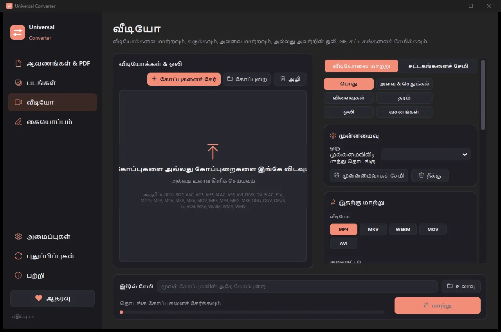

MP4, MKV, WebM, MOV, AVI இடையே வீடியோக்களை மாற்றுங்கள்
Universal Converter MKV, MOV, AVI, WMV, FLV, MPG, TS, WebM மற்றும் பலவற்றைத் திறந்து, நீங்கள் தேர்ந்தெடுக்கும் ஒலி, வசனத் தடங்களை வைத்துக்கொண்டு MP4, MKV, WebM, MOV அல்லது AVI ஆக மாற்றும். MP4 கிட்டத்தட்ட எங்கும் இயங்கும். Android செயலி MP4, MKV, WebM, MOV ஆக மாற்றும்.
நிறுவுவது, புதுப்பிப்பது எப்படி
- பதிவிறக்கிய .dmg-ஐத் திறந்து Universal Converter-ஐ Applications-க்கு இழுக்கவும்.
- செயலியைத் திறக்கவும். Apple-ஆல் கையொப்பமிடப்படாததால் முதல் முறை macOS அதைத் தடுக்கும்: Done என்பதைக் கிளிக் செய்யவும்.
- System Settings > Privacy & Security என்பதைத் திறந்து, கீழே உருட்டி, Open Anyway என்பதைக் கிளிக் செய்து கடவுச்சொல்லை உள்ளிடவும். இதை ஒருமுறை மட்டுமே செய்ய வேண்டும்.
புதுப்பிப்புகள்: செயலி முதலில் திறக்கும்போது நீங்கள் அனுமதித்தால், ஒவ்வொரு முறை தொடங்கும்போதும் புதிய பதிப்புகளைச் சரிபார்த்து, அவற்றின் டிஜிட்டல் கையொப்பத்தை உறுதிசெய்து, நீங்கள் தேர்வுசெய்யும்போது நிறுவும்.
நிறுவுவது, புதுப்பிப்பது எப்படி
- உங்கள் தொலைபேசியில் “Android-க்குப் பதிவிறக்கு” என்பதைத் தட்டவும்.
- பதிவிறக்கிய கோப்பைத் திறக்கவும். Android கேட்டால், உங்கள் உலாவி அல்லது கோப்பு மேலாளர் செயலிகளை நிறுவ அனுமதிக்கவும்.
- நிறுவு என்பதைத் தட்டவும்.
புதுப்பிப்புகள்: செயலி தோராயமாக நாளுக்கு ஒருமுறை சரிபார்த்து, புதிய பதிப்பு தயாரானதும் சொல்லும். அதை அதே வழியில் பதிவிறக்கி பழையதன் மேல் நிறுவவும்; உங்கள் அமைப்புகள் காக்கப்படும்.
நிறுவுவது, புதுப்பிப்பது எப்படி
- .AppImage கோப்பைப் பதிவிறக்குங்கள்.
- அதை இயக்கக்கூடியதாக்குங்கள்: வலது கிளிக் செய்து, Properties > Permissions-இல் நிரலாக இயக்க அனுமதியுங்கள் (அல்லது டெர்மினலில்: chmod +x Universal-Converter-*.AppImage).
- அதை இருமுறை கிளிக் செய்யுங்கள். எதுவும் நிறுவப்படாது: செயலி இந்த ஒரே கோப்புதான்.
புதுப்பிப்புகள்: முதல் முறை திறக்கும்போது அனுமதித்தால், ஒவ்வொரு தொடக்கத்திலும் புதிய பதிப்புகளைச் சரிபார்த்து, அவற்றின் டிஜிட்டல் கையொப்பத்தை உறுதிசெய்து, AppImage கோப்பை அதே இடத்தில் மாற்றும்.
இதை எப்படிச் செய்வது
- Universal Converter-ஐத் திறக்கவும்.
- உங்கள் கோப்புகளை அல்லது ஒரு முழுக் கோப்புறையைச் சாளரத்திற்குள் இழுக்கவும், அல்லது “கோப்புகளைச் சேர்” என்பதைக் கிளிக் செய்யவும்.
- “இதற்கு மாற்று” என்பதன் கீழ் நீங்கள் விரும்பும் வடிவத்தைத் தேர்ந்தெடுக்கவும், உதாரணமாக MP4. மற்றவற்றை அப்படியே விடுங்கள், அல்லது ஒரு முன்னமைவைத் தேர்ந்தெடுங்கள்.
- “மாற்று” என்பதைக் கிளிக் செய்யவும். புதிய கோப்புகள் மூலக் கோப்புகளுக்கு அருகில், அல்லது நீங்கள் தேர்ந்தெடுக்கும் கோப்புறையில் சேமிக்கப்படும்.

ஏன் இணையமின்றி?
Universal Converter உங்கள் சொந்தச் சாதனத்திலேயே வேலை செய்கிறது. உங்கள் கோப்புகள் தனிப்பட்டவையாக இருக்கும், பெரிய கோப்புகள் பிரச்சினையல்ல, இணைய இணைப்பு இல்லாமலும் இயங்கும்.
இது செய்யக்கூடிய மேலும் பல
- ஒரு PDF-ஐ Word ஆக மாற்றுங்கள்
- Word ஆவணங்களை PDF ஆக மாற்றுங்கள்
- பல கோப்புகளை ஒரே PDF ஆக இணையுங்கள்
- PDF-ஐ நீங்கள் தேர்ந்தெடுக்கும் அளவுக்குச் சுருக்குதல்
- PDF-ஐ 100 KB, 200 KB அல்லது ஆன்லைன் படிவம் கேட்கும் எந்த அளவுக்கும் சுருக்குங்கள்
- PDF பக்கங்களை JPG படங்களாக மாற்றுங்கள்
- ஸ்கேன் செய்த ஆவணத்தைத் திருத்தக்கூடிய Word கோப்பாக்குங்கள்
- JPG, PNG, WEBP மற்றும் பலவற்றுக்கு இடையே படங்களை மாற்றுங்கள்
- படங்களின் அளவை மாற்றுங்கள் அல்லது ஒரு கோப்பு அளவுக்குச் சுருக்குங்கள்
- புகைப்படம் அல்லது கையொப்பத்தை 20 KB, 50 KB அல்லது சரியான பிக்சலுக்கு மாற்றுங்கள்
- புகைப்படங்களை ஒரே PDF ஆக இணையுங்கள்
- JPG-ஐ 100 KB-க்குக் குறைவான PDF ஆக்குங்கள்
- ஒரு படத்திலிருந்து உரையை நகலெடுங்கள் (OCR)
- பதிவேற்றாமல் ஒரு வீடியோவைச் சுருக்குங்கள்
- ஒரு வீடியோவின் ஒலியை MP3 ஆகச் சேமியுங்கள்
- ஒரு வீடியோவிலிருந்து GIF உருவாக்குங்கள்
- ஒரு PDF-இலிருந்து அட்டவணைகளை Excel-க்கு எடுங்கள்
- வங்கி அறிக்கை PDF-ஐ Excel ஆக மாற்றுங்கள்
- PDF விலைப்பட்டியல்களிலிருந்து அட்டவணைகளை Excel-க்கு எடுங்கள்
- PDF-இல் கையொப்பமிடுதல்
- PDF படிவத்தை நிரப்புதல்